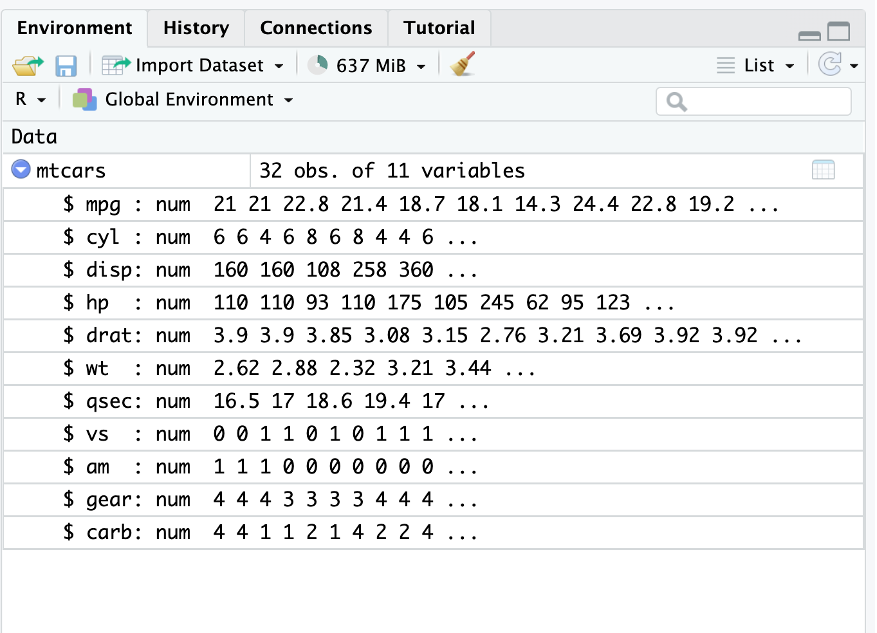

library(equivalence)Présentation rapide de R
Bref historique :
R est à la fois un logiciel et un langage. Il est gratuit et open source.
Version libre et gratuite du langage S développée chez Bell Laboratories par John Chambers (1980).
Robert Gentleman & Ross Ihaka (Université d’Auckland) proposent une première version de R en 1993.
R Core Team crée en 1997 assure la maintenance et l’évolution de R.
CRAN (Comprehensive R Archive Network) regroupe et met à disposition l’ensemble des éléments de R.
Fichiers gérés par R
Les scripts (fichiers .R) : ils vont contenir les codes R ainsi que des commentaires sur ces codes (très importants par la suite).
Les environnements (fichiers .RData) qui seront des ensembles d’objets.
Interfaces de R :
La basique : Rgui (déconseillée) composée d’une fenêtre principale appelée la Console à partir de laquelle on exécute les fonctions.
RStudio : interface graphique utilisée.

Les librairies de R (ou packages)
De très nombreux packages ont été développés pour R, ils permettent d’ajouter de nouvelles fonctionnalités. Pour installer un package on va dans Tools -> Install Packages

Par exemple (ne le faites pas ) on installe le package equivalence, ce qui est très important c’est qu’il faut demander à R installer toutes les dépendances du package. Ensuite il faut absolument charger le package dans le script pour pouvoir l’utiliser.
Installer R et RStudio
Les deux logiciels sont disponiles à l’adresse https://posit.co/download/rstudio-desktop/ et peuvent s’installer sur Windows, Mac ou Linux.
Premières commandes
Dans la console exécuter les lignes suivantes :
1 + 1
pi
sin(0)
sin(3*pi/2)A partir de maintenant toutes les commandes seront enregistrées dans un fichier script que vous nommerez TD1.R Pour ce faire : File -> New File -> R Script
La plupart des fonctions mathématiques sont définies dans R (library base)
La définition des variables
Une variable est un objet référencé dans le programme qui associe un identificateur à une valeur d’un certain type.
- L’identificateur est le nom de la variable utilisé pour l’appeler,
- La valeur est ce que contient la variable,
- Le type est l’ensemble dans lequel la variable prend sa valeur.
x=2
print(x)
mode(x)
## Supprimer x
rm(x)Les variables contenant des caractères (on utilise ““)
x<-"bonjour"
print(x)
mode(x)Les variables contenant des booléens (vrai ou faux)
x<-TRUE
print(x)
mode(x)Les vecteurs
- Un des objets de base de R
- toutes les valeurs de même type (nombre, chaine de caractères, booléen)
- création via la fonction c() [combine].
a1<-c(1.5,2,3.2,-1.5,0,-1)
a2<-c("fille","garçon","fille","fille","fille","fille")
a3<-c(TRUE,FALSE,TRUE,TRUE)On peut déterminer la nature du vecteur en utilisant class() :
class(a1)
class(a2)
class(a3)Exercice :
Combiner les vecteurs a1 et a2 dans un nouveau vecteur a.
Quelle est la classe du résultat ?
Voir la correction
a<-c(a1,a2)
class(a)- rep permet d’écrire n fois la valeur a : rep(a,n)
rep(5,10)
rep("fille",10)Exercice : créer un vecteur avec 5 fois fille et 10 fois garçon.
- seq définit une séquence de nombre entre MIN et MAX avec un pas de L : seq(MIN,MAX,by=L)
seq(0,1,by=0.1)
seq(10,20,by=5)Indexation et longueur d’un vecteur
La fonction length() permet de calculer le nombre de valeurs d’un vecteur (quelle que soit la nature du vecteur considéré).
length(a1)
length(a2)Chaque élément d’un vecteur est repéré par un indice entre [].
a1[1]
a1[3]
# Opérations sur les éléments d'un vecteur
a1[1]+a1[3]
a1[1]/a1[3]On peut changer la valeur de a1[3] en lui affectant une nouvelle valeur :
a1[3]= -3
a1On peut aussi ajouter de nouvelles valeurs aux vecteurs a1
a1[12]=10
a1[13]=11Les calculs de base avec un vecteur
On peut ajouter, soustraire, multiplier des vecteurs entre eux à condition qu’ils soient de même longeur et qu’ils soient numériques.
a1=seq(10,20,by=1)
a2=seq(20,30,by=1)
a1+a2
a2-a1
a1*a2
a2/a1
a1^2*log(a2)Ouvrir l’aide
Toutes les fonctions prédéfinies dans R possèdent une vignette (description des arguments de la fonction, des sorties et un exemple utilisant la fonction). Pour accéder à cette aide on met un point d’interrogation devant le nom de la fonction.
Exemple : Décrire la fonction sample
?sampleUne fonction comporte plusieurs arguments. Par exemple sample(x, size, replace = FALSE, prob = NULL)
Parmi les arguments, certains sont obligatoires
- x est un vecteur dans lequel on va choisir des valeurs au hasard.
- size est la taille du résultat
d’autres sont facultatifs (ils ont des valeurs par défaut) ici replace et prob.
sample(-10:10,1)
sample(-10:10,3)Un peu de logique
l’opérateur | correspond à OU : A | B est faux lorsque les deux événements A et B sont faux simultanément et est vrai dans tous les autres cas.
l’opérateur & correspond à ET : A & B est vrai uniquement lorsque les deux événements A et B sont vrais et est faux dans tous les autres cas.
On définit un vecteur
set.seed("44")
x=sample(-20:20,40,T)On veut savoir combien de valeurs de x sont postives.
sum(x>0)Quelless sont les positions de ces valeurs ?
which(x>0)Quels sont les indices des valeurs supérieure à 5 ou inférieure à 0 ?
which(x>5 | x<0)Quels sont les indices des valeurs dans [5,10] ?
which(x>=5 & x<=10)Exercices
Exo 1 :
- Créer le vecteur x contenant le nom des villes suivantes Nantes, Brest, Rennes, Angers, Le Mans
Voir la correction
x<-c("Nantes", "Brest", "Rennes", "Angers","Le Mans")- Afficher le premier élément de x
Voir la correction
x[1]- Afficher tous les éléments de x sauf le premier
Voir la correction
x[-1]- Afficher les trois premiers éléments de x.
Voir la correction
x[1:3]- Afficher le deuxième et le quatrième élément de x.
Voir la correction
x[c(2,4)]- Classer les éléments de x dans l’ordre alphabétique puis anti-alphabétique grâce aux fonctions sort et rev.
Voir la correction
sort(x)
rev(sort(x))Exo 2 :
- Créer un vecteur \(y\) contenant les entiers pairs inférieurs à 100 grâce à la fonction seq.
Voir la correction
y<-seq(2,100,by=2)- Ajouter à y les entiers impairs inférieurs à 100. On stockera la valeur obtenue dans une variable \(S\).
Voir la correction
z<-seq(1,100,2)
S<-y+z- Déterminer la taille du vecteur \(S\) final.
Voir la correction
length(x)- A l’aide de la fonction rep créer un vecteur sonnette contenant 4 fois « ding » puis 4 fois « dong ».
Voir la correction
sonette<-c(rep("ding",4),rep("dong",4))- A l’aide de la fonction sample créer un vecteur melodie contenant une succession aléatoire de « ding » et de « dong » de taille 100.
Voir la correction
melodie<-sample(c("ding","dong"),100,replace=T)- Grâce à la fonction table, déterminer combien il y a de « ding » et combien il y a de « dong » dans melodie.
Voir la correction
table(melodie)Exo 3 :
- Générer un vecteur \(x\) de taille 100 de valeurs tirées selon une loi normale centrée réduite (ie de paramètre 0 et 1) grâce à la fonction rnorm.
Voir la correction
x<-rnorm(100)- Calculer la somme et la moyenne de x à l’aide des fonctions dédiées.
Voir la correction
sum(x)
mean(x)- Calculer le minimum, le premier quartile, la médiane, le troisième quartile et le maximum de \(x\). La fonction quantile bien utilisée vous donnera toutes ces informations directement…
Voir la correction
quantile(x)- Générer le vecteur booléen indiquant si les nombres contenus dans \(x\) sont positifs (TRUE) ou non (FALSE).
Voir la correction
y<-(x>0)- Même question pour indiquer les nombres sont compris entre -1 et 1.
Voir la correction
(x< -1)|(x>1)- Afficher les indices des valeurs négatives de x.
Voir la correction
which(x<0)- Afficher la valeur absolue de \(x\).
Voir la correction
abs(x)- Afficher la partie entière des valeurs de x.
Voir la correction
floor(x)- Afficher uniquement les valeurs positives de x.
Voir la correction
x[x>0]- Remplacer les valeurs négatives de x par 0. Vérifier le remplacement.
Voir la correction
x[x>0]<-0
xLes matrices
Les matrices sont comme en mathématiques des tableaux de données. Attention comme pour les vecteurs les matrices ne contiendront que des éléments du même type (numérique, texte, booléen).
Définition et fonctions de base
A=matrix(c(1,2,3,
2,1,-1,
-3,-1,1),nrow=3)Quelques fonctions utiles la dimension de la matrice
dim(A)Le résultat est donc un vecteur ayant deux éléments le nombre de ligne et le nombre de colonnes
Indexation des éléments d’une matrice
Les éléments d’une matrice sont identifiés par un numéro de ligne et de colonne entre crochets A[i,j]
A[1,2]
# première ligne de A
A[1,]
# première colonne de A
A[,1]Exercice :
- Générer un vecteur fillmat contenant 250 valeurs tirées selon une loi uniforme continue de paramètres 0 et 10 grâce à la fonction runif.
Voir la correction
fillmat<-runif(250,0,10)- Créer une matrice Mesures de 50 lignes et 5 colonnes contenantes les valeurs de fillmat. Les colonnes seront nommées Mesure1,…, Mesure5.
Voir la correction
Mesures<-matrix(fillmat,nrow=50)
colnames(Mesures)<-paste("Mesure",1:5,sep="")- Créer un vecteur Groupe de taille 50 contenant des valeurs entières entre 1 et 5 (fonction sample). On interprétera Groupe comme le groupe d’appartenance des 50 lignes de Mesures. Ajouter cette colonne à la matrice Mesures (fonction cbond).
Voir la correction
Groupe<-sample(1:5,50,replace=T)
Mesures<-cbind(Mesures,Groupe)- Combien de lignes appartiennent au groupe n°2 ?
Voir la correction
sum(Groupe==2)- Afficher le numéro des lignes appartenant au groupe n°2.
Voir la correction
which(Groupe==2)- Afficher les lignes de Mesures correspondant au groupe n°2.
Voir la correction
Mesures[Groupe==2,]- Déterminer combien Mesures contient de valeurs inférieures à 5 (on exclura la colonne groupe du comptage).
Voir la correction
sum(Mesures[,-6]<5)- Calculer la moyenne des valeurs de Mesures correspondant au groupe n°4.
Voir la correction
mean(Mesures[Groupe==4,1:5])- Même question mais pour les 3 premières colonnes uniquement.
Voir la correction
mean(Mesures[Groupe==4,1:3])- Appliquer à Mesures les fonctions dim, ncol et nrow. A quoi correspondent ces nombres ?
Les data frames
C’est l’objet le plus important et le plus utilisé dans R il s’agit d’un tableau de données mais contrairement aux matrices on peut avoir différents types de données dans un dataframe.
Création d’un data frame
On crée deux variables x et y contenant \(n=100\) nombres distribués selon une loi uniforme continue sur [0,20] (fonction runif) et une variable gr (expliquer le résultat du code correspondant). La fonction round permet d’arrondir.
x<-round(runif(100,0,20),1)
y<-round(runif(100,0,20),1)
gr<-sample(c("ING1","ING2"),size=100,replace=T,prob=c(0.6,0.4))
df<-data.frame(NoteF=x,NoteM=y,gr=gr)L’indexation des éléments dans un data-frame est la même que dans une matrice :
df[1,1]On peut également sélectionner une colonne du data frame via $
df$NoteFLes fonctions utiles pour les data frame
summary
Cette fonction permet de résumer l’ensemble des variables du data frame.
summary(df)apply
La fonction apply permet d’appliquer une fonction sur les lignes (1) ou les colonnes d’un data frame : par exemple si on souhaite appliquer la fonction moyenne (mean) sur les colonnes du data frame df on utilise :
apply(df[,1:2],2,mean)Remarque : on n’a utilisé que les deux premières colonnes du data frame car la troisième n’est pas numérique (donc on ne peut pas calculer sa moyenne).
Importation d’un data frame inclus dans un package
Pour accéder aux data frames de R :
data()ensuite on peut grâce à la fonction help obtenir de l’aide sur l’un des data frame :
help("mtcars")Ensuite on charge le jeu de données via
data("mtcars")Une fois le data frame importé on constate qu’il est présent dans la fenêtre environnement

Importation d’une base de données externe
On peut utiliser une interface graphique pour ouvrir les fichiers contenant le data frame. Les plus courants sont :
- *.csv : (Comma Separed Values) ce sont des fichiers de type tableaux sans mise en forme
- *.xlsx : fichiers produits à partir du logiciel excel
- *.ods : fichiers produits à partir du logiciel Calc de LibreOffice.

On va importer le data frame contenu dans le fichier bordeaux.csv disponible sur Connect (vous devez le télécharger).
Vous avez deux solutions : From text (base)

From text (readr)
Ensuite il est recommandé de copier/coller la ligne de commande dans le script R afin de pas à avoir à reproduire la manipulation à chaque session de travail sur le fichier bordeaux.csv

Exercice sur les data frame
- Charger le fichier de données iris. Lire l’aide de iris pour comprendre le jeu de données.
Voir la correction
data("iris")
help("iris")- Quel est le type de iris ? Quelles sont les dimensions de iris ?
Voir la correction
class(iris)
dim(iris)- Appliquer la fonction str à iris. A quoi correspondent les informations renvoyées ?
Voir la correction
str(iris)- Appliquer la fonction summary à iris. A quoi correspondent les informations renvoyées ?
Voir la correction
summary(iris)- Utiliser les fonctions colnames() et rownames(). Quelles sont les informations renvoyées ?
Voir la correction
rownames(iris)
# Le nom des lignes de iris
colnames(iris)
# Le nom des colonnes de iris- A l’aide la fonction de texte paste remplacer le nom des lignes par fleur 1, …, fleur 150.
Voir la correction
rownames(iris)<-paste("fleur",1:150,sep=" ")- Pour un data frame on peut appeler une colonne par son nom en utilisant $ : iris$Sepal.Length. En utilisant cette information donner la classe de la colonne Species.
Voir la correction
class(iris$Species)- Quels sont les niveaux du facteur “Species” (fonction levels) ?
Voir la correction
levels(iris$Species)- Créer une nouvelle colonne nommée groupe (on pensera à $) dans le data frame iris identique à la colonne Species. Quelle est la classe de cette nouvelle colonne ?
Voir la correction
iris$groupe=iris$Species
class(iris$groupe)- Renommer les niveaux de la colonne groupe en A, B, C (A pour setosa, B pour versicolor, C pour virginica). Afficher les indices des lignes de iris correspondant au groupe B.
Voir la correction
levels(iris$groupe)=c("A","B","C")
which(iris$groupe=="B")- Créer l’ensemble des numéros de lignes correspondantes aux fleurs du groupe A. Afficher les lignes de iris correspondant au groupe A. Proposer une solution alternative.
Voir la correction
I=which(iris$groupe=="A")
iris[I,]
iris[iris$groupe=="A",]- En adoptant la même logique que la question précédente, afficher uniquement les lignes de iris où « Sepal.Length » est inférieur à 5.
Voir la correction
iris[iris$Sepal.Length<=5,]- Combien y a-t-il d’individus ayant la longueur des sépales inférieure à 5 ?
Voir la correction
sum(iris$Sepal.Length<=5)Pour aller plus loin
- Charger le data frame mtcars. Combien de véhicules et de caractéristiques sur les véhicules sont contenus dans le data frame ?
Voir la correction
data("mtcars")
help("mtcars")
dim(mtcars)- Deux caractéristiques sont mal identifiées dans le data frame car ce sont des variables qualitatives (facteurs), rectifier en utilisant la fonction as.factor.
Voir la correction
str(mtcars)
mtcars$vs=as.factor(mtcars$vs)
mtcars$am=as.factor(mtcars$am)- En utilisant l’aide du data frame mtcars renommer les niveaux des deux facteurs précédents.
Voir la correction
levels(mtcars$vs)=c("V","droit")
levels(mtcars$am)=c("Auto","Manu")- Etablir la table de contingence de ces deux facteurs (fonction table)
Voir la correction
table(mtcars$vs,mtcars$am)- Calculer la moyenne des 7 premières variables (on utilisera les fonctions mean et apply).
Voir la correction
apply(mtcars[,1:7],2,mean)- Reprendre la question pour les voitures avec un moteur à plat. De même pour les voitures ayant un moteur en V et qui sont automatiques.
Voir la correction
apply(mtcars[mtcars$vs=="V",1:7],2,mean)
apply(mtcars[mtcars$vs=="droit" & mtcars$am=="Auto",1:7],2,mean)